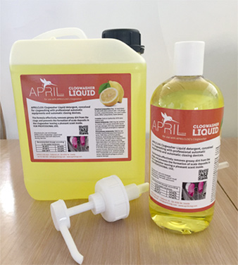
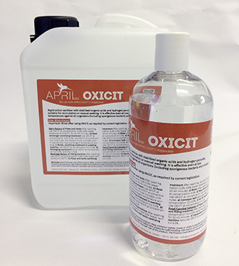

Description
APRILCLOG® Clogwasher Liquid detergent,
conceived for clogwashing with professional
automatic equipments and automatic
closing devices.
The formula effectively removes greasy dirt
from the clogs and prevents the formation
of scale deposits in the clogwasher leaving
a pleasant scent inside.
FOR PROFESSIONAL USE.
Directions for use and dosage
APRILCLOG®'s Clogwasher Liquid must be exclusively used with electronic dosing devices.
| Recommended dosage according to the water hardness |
| 15-25° F |
2,0 g/lt. |
| 25-35° F |
3,0 g/lt. |
| over 35° F |
4,0 g/lt. |
Chemical Composition (Reg. CE 648/2004): 15-30% EDTA tetra sodium salt; < 5% phosphonates,
polycarboxylates, non-ionic surfactants. Other components: Scent (lemon).
Contains: Sodium Hydroxide; EDTA tetra sodium salt.
Hazard statements: H290 may be corrisive to metals. H314 causes severe skin burns and eye
damage. H373 may cause damage to organs through prolonged or repeated exposure.
Precautionary statements: P260 Do not breathe dust/fumes/gas/mist/vapours/spray.
P280 Wear protective gloves/proective clothing/eye protection/face protection.
P301+P330+P331 IF SWALLOWED: Rinse mouth. Do NOT induce vomiting.
P303+P361+P353 IF ON SKIN (or hair): Take off immediately all contaminated clothing.
Rinse skin water/shower. P305+P351+P338 IF IN EYES: Rinse cautiously with water for several
minutes. Remove contact lenses if present and easy to do. Continue rinsing. P310 Immediately
call a poison center/doctor. P390 Absorb spillage to prevent material damage.
Download datasheet

Description
Rapid action sanitizer with stabilized organic acids
and hydrogen peroxide, suitable for recirculation
or manual washing. It is effective even at low
temperatures against all organisms (including
sporigenous bacteria and viruses).
Physical and Chemical Properties:
| Appearance: |
Liquid |
| Color: |
Colorless |
| Odour: |
Characteristic |
| Relative density (20°C): |
1.14 g/mL |
| pH (sol.1% in H20): |
2,80 |
| pH: |
1,00 |
| Solubility in water: |
Unlimited |
| Foam: |
No foaming |
Product Compatibility:
OXICIT, when applied at the recommended concentration and temperature, is suitable for
APRILCLOG® clogs.
Use instructions:
Important: Rinse after using OXICIT, as required by current legislation.
Dairy factory
a) Pipes and tanks
After washing, use OXICIT at concentration 0,2%-0,5% (water temperature 5÷20°C),
for 20-40 minutes.
b) Heat exchanger sanitizing treatment
Use OXICIT at concentration 0,1%-0,3%, use OXICIT at concentration 0,1%-0,3%, the product
must circulate until it reaches the heat exchangers temperature working.
c) Molds, sanitizing treatment in washing machine
Use OXICIT at concentration 0.2-0.5%.
d) Packaging equipment
Spray OXICIT at concentration 0.3-0.5%, and then rinse.
Beverage factory
a) Filling machine
After washing, use OXICIT at concentration 0,2%-0,5% (water temperature 5÷20°C).
b) Pipes and tanks sanitizing treatment
After washing, use OXICIT at concentration 0,2%-0,5% (water temperature 5÷20°C),
for 20-40 minutes.
c) Mixer
After washing, use OXICIT at concentration 0.5%.
d) Beer fermentation tank
Use OXICIT at concentration 0.5-1% for 20-40 minutes.
e) Conveyor belt
Nebulize PERACTIVE 150 at concentration 0,3-0,5%.
f) UF, MF Membranes
Use OXICIT at concentration 0.2-0.5.
Food/Canning Industry
a) Pipes, tanks, mixer and filling machines
After washing, use OXICIT at concentration 0.2-0.5% water temperature 5-20°C
for 20-40 minutes.
b) Equipment and packaging machine
Nebulize OXICIT at concentration a 0.3-0.5%.
WARNINGS:
Avoid improper use of the product . Keep container tightly closed or where is possible store
so as to avoid extremes of temperature.
See material safety data sheets for safe handling information and for waste disposal.
IRCASERVICE S.p.A. shall not be held liable for improper use of the product.
The Product could feature change without notice.